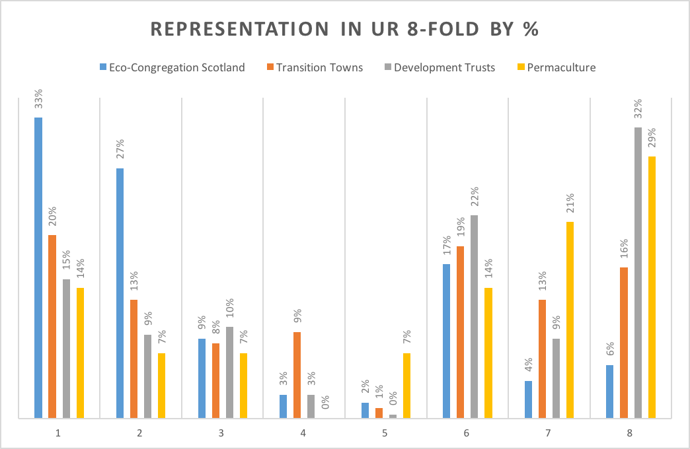
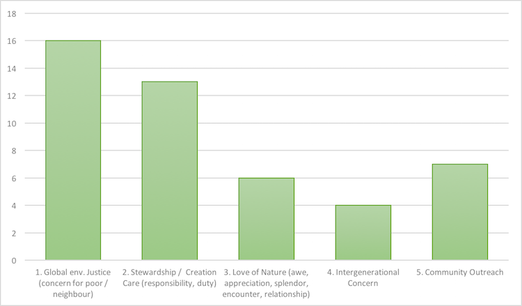

Who Are Eco-Congregations?
Began in 1999
Initiated by Forth Environment Link outreach (central Scotland, environmental education charity), later funded by Keep Scotland Beautiful, Scottish Government and ECS member congregations.
Over 350 Churches in Scotland Participate (~9%)
Compare that with...
- 233 Development Trusts
- 88 Climate Action Groups
&Transition Initiatives - 14 Permaculture Projects

Participating in a variety of low carbon activities...
including 41 CCF funded projects
- Recycling
- Food growing
- Improving building heating & energy use
- Implementing renewables
- Hosting educational events
- Linking religious values and pro-environmental behaviour
Slightly more urban, but with a strong presence in specific remote areas
Our Research
Co-funded by AHRC / ESRC
2013-2016
http://ancestraltime.org.uk
Working with a lot of data
- participant observation at worship and community events
- researchers assisted with site visits / assessments
- documentary analysis of a Eco- Congregation award applications
(90 of 133 total awarded sites, or 67.7%) - analysis of ECS church websites
- researchers attended, participated and observed at network events, board meetings, green group meetings, and annual conferences
- social network engagement analysis of ECS
- interviews with individuals and groups across Scotland
- interviews with volunteers and executives at related secular groups
- interviews with the ECS staff team and board members
- GIS-based comparative demographic analysis
- sampling of at least 10% across a variety of demographics (denomination, region, urban/rural, deprivation)
Our primary research question:
Do unique conceptions of time maintained within spiritual communities offer a possible synergy between heritage and environment?
Our Findings?
Eco-Congregations tend to stay "off the radar"
- No mention in 2015 Changeworks study (cf. p. 31; Table 7.2)
- Active but silent partner behind some Community Development Trusts and Transition Groups, but also working in some communities in an independent capacity.
- Partnerships with large environmental charities
(RSPB, WWF)
Reasons for Action?
Climate justice, stewardship, love of nature, intergenerational concern...

A place where values are linked with pro-environmental behaviours, but more than this as well...
Hidden pro-Climate Impacts?
- Trialing new ideas for sustainability
(case study: solar panels, community gardens, boilers) - Provide personnel and "endurance" for CCF grants, sustainability projects, venues for other groups
- Linking spirituality with environmental concern
- Validating "moral" aspect to climate change mitigation
- Highlighting the international aspect of climate impacts and relational side to mitigation
For discussion
- How can our research assist government in improving outreach to and targetting of and support for religious communities in Scotland on low-carbon activities?
- Covering the spectrum, from "uninvolved" to "climate champions"
- Mobilising values frameworks, but also affirming the role of lay knowledge in reckoning with climate change
- CCF engagement with churches
- RPP3